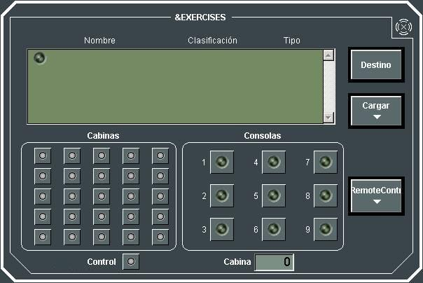
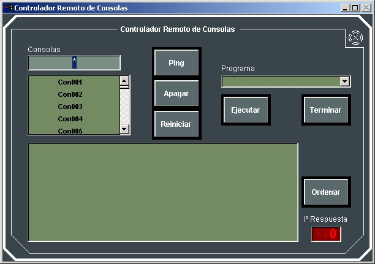

Servidor de Ejercicios

El Simulador Táctico Galeón permite la ejecución de Ejercicios de las siguientes formas:
- Ejecución en Red.
- Ejecución Local.
Para iniciar una Ejecución de un Ejercicio en Red el administrador del sistema debe ejecutar la herramienta de Servidor de Ejercicios:

Esta herramienta le permite al administrador cargar para su Ejecución en Red varios ejercicios simultáneos, finalizar los ejercicios cargados, consultar las consolas asignadas y conectadas a cada Ejercicio cargado, y resolver conflictos de asignación de consolas a más de un Ejercicio simultáneamente:
Nota: Aunque esta herramienta no limita el número de Ejercicios que pueden ser cargados simultáneamente, la cantidad total de Elementos que forman parte del conjunto de Ejercicios cargados está restringida a los límites descritos en Descripción General – Capacidades del Sistema.
- Cargar: se abre un nuevo diálogo para carga de Ejercicios (ver apartado Carga de Ejercicios). Los Ejercicios cargados se muestran en la lista, indicando su clasificación y tipo.
- Finalizar: seleccionando un Ejercicio cargado de la lista, y pulsando este botón, se finaliza este Ejercicio en el servidor.
- Cabinas / Cabina de Control / Consolas: Mediante estos leds, se muestran las cabinas, y dentro de cada cabina, las consolas asignadas al Ejercicio seleccionado.
- Led NO PRESENTE: No hay consolas en la cabina asignadas al Ejercicio seleccionado.
- Led APAGADO: Hay consolas en la cabina asignadas al Ejercicio seleccionado, pero no están conectadas aún ninguna al Ejercicio.
- Led AMARILLO: Hay consolas en la cabina asignadas al Ejercicio seleccionado, y no todas están conectadas al Ejercicio.
- Led VERDE: Hay consolas en la cabina asignadas al Ejercicio seleccionado, y todas están conectadas al Ejercicio.
- Led ROJO: Hay consolas en la cabina asignadas al Ejercicio seleccionado, pero existe conflicto debido a que estas consolas están asignadas a más de un Ejercicio cargado.
- Led NO PRESENTE: La Consola no está asignada al Ejercicio seleccionado. Si el botón sobre el que está el led no está disponible (hundido) significa que la consola no está asignada en el Ejercicio seleccionado por lo que no podrá ser incluida. Si dicho botón está disponible (no hundido) significa que la consola sí había sido asignada a este Ejercicio en Preparación pero ha sido quitada para resolver conflicto (como se explica más adelante). Puede por tanto volver a ser asignada, pulsando el botón.
- Led APAGADO: La Consola está asignada al Ejercicio seleccionado, pero no está conectada al Ejercicio.
- Led AMARILLO: La Consola está asignada al Ejercicio seleccionado, y está en proceso de conexión con el Ejercicio.
- Led VERDE: La Consola está asignada al Ejercicio seleccionado, y está conectada al Ejercicio.
- Led ROJO: La consolas está asignada al Ejercicio seleccionado, pero existe conflicto debido a que esta consola están asignada a más de un Ejercicio cargado. Esta consola no podrá conectar con ningún Ejercicio hasta que se resuelva el conflicto.
- Control Remoto: se abre el siguiente diálogo:
- Mediante expresiones con caracteres comodín (*,?,[]) se seleccionan las consolas sobre las que ejecutar las siguientes acciones. Por ejemplo:
- Las acciones que se pueden ejecutar remotamente en las consolas son las siguientes:
- Las respuestas de las consolas se muestran en el área inferior, y pueden ser ordenadas alfabéticamente.
El significado de los leds para las Cabinas es el siguiente:
Pulsando en el led de una Cabina, se muestran a la derecha los leds correspondientes a las consolas pertenecientes a dicha Cabina. El significado de los leds para las Consolas es el siguiente:
Actuando sobre los leds de Consolas, el administrador podrá también resolver conflictos de asignación de consolas a más de un Ejercicio simultáneamente. Pulsando sobre los leds en estado ROJO o VERDE, la consola dejará de estar asignada al Ejercicio seleccionado. Estos leds pasarán a estado NO PRESENTE, pero podrán ser pulsados de nuevo para volver a incluir la Consola al Ejercicio seleccionado.
Al Lanzar la Consola para una Ejecución en Red (no pulsar ESCAPE mientras se presenta el splash), la consola intentará conectar con un ejercicio que se encuentre en Ejecución en Red, y que incorpore a esta Consola bien como Instructor o asignada a una Unidad, teniendo en cuenta las reasignaciones de Consolas de Alumno realizadas por el administrador para resolver conflictos entre varios Ejercicios cargados.
Además, en este tipo de Ejecuciones, las Consolas de Instructor pueden estar asignadas en Preparación a más de un Ejercicio, por lo que puede ser Consola de Instructor de más de un Ejercicio cargado en Red por el Servidor de Ejercicios. Cuando se produce esta circunstancia, y se arranca la consola en cuestión, el Instructor deberá seleccionar a qué Ejercicio desea conectarse.

Esta herramienta permite al administrador ejecutar comandos o aplicaciones remotamente en las consolas del sistema.
Con1*
Con??1
Con11[123]
Ping
PowerOff
Reboot
Ejecutar (comando o aplicación)
Terminar (proceso)